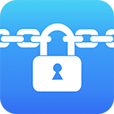

中文
Home

This is the Guideline page for Crypto Disk.
Main functions include encryption, file transfer, file management and cloud.
Crypto Disk copyright reserved to Yingpei Zeng.
Main functions include encryption, file transfer, file management and cloud.
Crypto Disk copyright reserved to Yingpei Zeng.
Features Introduction
The app is featured by encryption, file transfer, file management and cloud:- Encryptions base on TrueCrypt (and its successor VeraCrypt) virtual disk encryption format, by which we provide three levels of protection.
- File transfer supports iTune/ HTTP/ FTP(via WiFi)/ AirDrop(via WiFi or bluetooth);
- File management supports to edit(open, copy, delete, zip...) files within the app.
- Cloud supports to import files from iCloud/ Dropbox/ Box etc.
TrueCrypt／VeraCrypt Security Discussions
We believe that the TrueCrypt/VeraCrypt format encrypted volume is secure, based on following reasons:- The TrueCrypt desktop software base on TrueCrypt format, is a software that has 10-year history and is used all around the world. There was no backdoor or major problem identified in a 3rd party audit in 2014, and 2015 (audit started from 2013) [1],[5].
- Security scientists didn’t find any mathematical problems in TrueCrypt format [2].
- Two stories in wiki mentioned that both the Brazilian National Institute of Criminology (INC) and the Federal Bureau of Investigation (FBI) failed to access files in TrueCrypt encrypted volumes [4]. (Note we never mean to against governments, not even to protect criminals.)
- TrueCrypt officially announced that they would not maintain their desktop software on May 24, 2014, which triggered wide discussions [3]. However, the reason of stopping maintenance is not that the format is not secure. Instead, it is because the developers think "there is no longer interest [in maintaining the project]." [4]
- VeraCrypt is a fork of TrueCrypt, and fixed some potential problems of TrueCrypt. The most notable fix is the increase of iteration count of key derivation algorithm (which also makes it is not compatible with TrueCrypt format).[6]
- We will continue monitoring any problems related to TrueCrypt/VeraCrypt format and TrueCrypt/VeraCrypt software and respond as soon as possible to keep our users’ data secure.
FAQ
- In v2.4.7 and later, the App offers a feature that user could choose whether to store the passwords of crypto disks or only the passwords of non-hidden crypto disks into the Keychain protected by device Touch ID hardware when opening disks (in v2.4.6 and before, it never stores the passwords of crypto disks in any form, e.g., encrypted or hashed forms). Touch ID, together with a coprocessor called Secure Enclave, can make that only valid fingerprints are able to retrieve the saved password in Keychain [7].In addition, we choose the most secure settings iOS provides:
a. TouchIDCurrentSet setting, means that only fingerprints in current fingerprint set on the device can retrieve stored passwords, whenever the fingerprint set has any fingerprint addition or removal, all stored passwords cannot be retrieved. Also, only fingerprints but not the device passcode can retrieve stored passwords.
b. WhenUnlockedThisDeviceOnly setting, means that stored passwords are only be securely saved in this device, and cannot be backed up and restored to other devices (“Keychain Data Protection” subsection, page 14, [7]) . Note the feature require iOS 9 or later, and Touch ID.
- Note that the passcode of the App is different from the passwords of crypto disks. Passcode is needed when entering the App (if passcode is enabled); however, password is further needed when opening a crypto disk. It’s also a form of defend-in-depth. Also, the App denies any login for half an hour after 3 failed login attempts, to make brute-force passcode attack very hard.
- Now when you open videos and audios inside crypto disks, the App will first copy them to cache folder; however, after you end your playing, the App will automatically delete the copies.
- In the browsing history file of the App we store the hashed (sorted hash) file path , and adversary cannot recover sensitive information like file name.
Reference
[1] TrueCrypt audit finds “no evidence of backdoors” or malicious code, http://arstechnica.com/security/2014/04/truecrypt-audit-finds-no-evidence-of-backdoors-or-malicious-code/[2] Alexei Czeskis, David J. St. Hilaire, Karl Koscher, Steven D. Gribble, Tadayoshi Kohno, and Bruce Schneier, Defeating Encrypted and Deniable File Systems: TrueCrypt v5. 1a and the Case of the Tattling OS and Applications. HotSec, 2008
[3] Bombshell TrueCrypt advisory: Backdoor? Hack? Hoax? None of the above? http://arstechnica.com/security/2014/05/bombshell-truecrypt-advisory-backdoor-hack-hoax-none-of-the-above/
[4] http://en.wikipedia.org/wiki/TrueCrypt Retrieved 2014-05-31
[5] Open Crypto Audit,TrueCrypt Phase II, 2015-04-02
[6] VeraCrypt forum discussion: Why is this more secure than TrueCrypt? https://veracrypt.codeplex.com/discussions/569777#PostContent_1313325 Retrieved 2014-06-22
[7] Apple, “iOS Security”, May 2016, https://www.apple.com/business/docs/iOS_Security_Guide.pdf